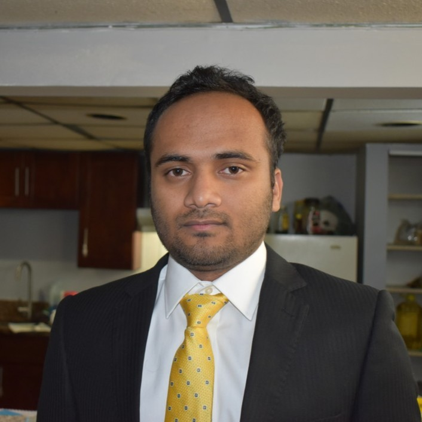

Manjurul Alam,
PhD
I build patient-specific finite element models of blood vessels to ask a simple question with hard mechanics behind it — where, and why, does an aneurysm wall fail first. My work sits at the boundary of applied mathematics, mechanical engineering, and vascular medicine.

About
BioI'm a computational bioengineer trained at the intersection of mechanics and medicine. I hold a PhD in Bioengineering from George Mason University (2020) and an MS in Mechanical Engineering from Southern Illinois University Edwardsville (2016). My doctoral work focused on the biomechanics of intracranial saccular aneurysms — using patient-specific, image-based finite element models to quantify how contact constraints from surrounding tissue change stress distribution, and rupture risk, at the aneurysm fundus.
Since graduating, I've carried that same discipline into industry — running non-linear FEA for fire-protection hardware, biomechanical simulation for AR/VR products, and mechanical integrity analysis for energy infrastructure. The common thread is turning messy physical geometry into models that can actually inform a clinical or engineering decision. Alongside this, I've spent six years teaching undergraduate engineering coursework, which keeps my explanations honest and my equations legible to people outside my own subfield.
I'm currently open to opportunities in modeling & simulation, computational science, and biomechanics/bioengineering roles, in industry or academia.
Experience
Industry & researchMechanical Integrity and Aeromech Engineer
Siemens Energy · Full-time
- Improved technical capabilities and methodologies by reducing error margins (10%–15%) in computer simulation of fatigue (HCF, LCF) and creep models to improve or introduce gas turbine components (e.g., blades, vanes).
- Improved damping and forced response calculation by introducing a new tool to calculate non-linear frictional contact damping for assessing mechanical integrity of gas turbine components.
- Assisted design engineers and team in validating innovative and existing gas turbine designs per guidelines, reducing more than 70% of labor and repetitive test expenses.
- Prepared formal technical reviews and guides for performing fatigue and creep models (superalloys) to train an interdisciplinary team of 25 junior and senior simulation engineers on design methods and technology data application.
Engineering Analyst IV, FEA
Johnson Controls · Full-time
- Extended computer simulation capability from 2D to 3D by introducing non-linear material simulation to validate complex engineering problems in fire suppression products.
- Supported design engineers in validating new and existing fire-protection designs against agency guidelines.
- Authored a technical guide for performing non-linear material simulations (rubber, plastic).
- Supported the company's transition to sustainable product development by reducing simulation cost and eliminating harm.
Research Engineer (Mechanical Engineer IV)
Meta, via Intelliswift Software Inc · Contract
- Ran biomechanical simulations in an HPC environment to improve the performance of AR/VR products.
- Validated biomechanical models for AR/VR products using constitutive models for soft biological facial tissue.
- Analyzed nonlinear biomechanical simulations of human skin against validated mechanical test data.
Junior Engineer and Scientist
Safer World Group · Full-time
- Designed and tested elastomeric isolation mounts using FEA structural simulations for a NASA/DoD SBIR Phase I ($500K) and Phase II ($1.2M) proposal.
- Led preparation of internal and external NASA/DoD project reports and documentation.
- Drove design improvements through experiments, data analysis, and results interpretation.
Graduate Research Fellow
George Mason University · Full-time
- Led development of computational models simulating idealized and patient-specific structural tissue mechanics using commercial and open-source finite element methods.
- Ran simulations across CFD, computational solid mechanics, and 3D image processing (OpenFOAM, FEBio, Abaqus, ANSYS Fluent, Comsol, 3D Slicer, R).
- Modeled non-linear biomechanical behavior of soft tissues and implantable devices, and built simulation geometry in SolidWorks and AutoCAD.
- Published peer-reviewed manuscripts and presented findings at ASME, APS, BMES, and MDPI conferences.
Teaching experience
Graduate teaching assistantGraduate Teaching Assistant — Introduction to Bioengineering (BENG-101)
George Mason University · Department of Bioengineering
Graduate Teaching Assistant — Biomedical Signals and Systems (BENG-320) & Linear Algebra (MATH-203)
George Mason University · Department of Bioengineering
Graduate Teaching Assistant — Biomedical Signals and Systems (BENG-320)
George Mason University · Department of Bioengineering
Graduate Teaching Assistant — Biomedical Signals and Systems (BENG-320)
George Mason University · Department of Bioengineering
Graduate Teaching Assistant — Bioengineering Measurement Lab (BENG-302)
George Mason University · Department of Bioengineering
Graduate Teaching Assistant — Micro-Electro-Mechanical Systems (MEMS)
Southern Illinois University Edwardsville · Department of Mechanical Engineering
Research focus
What I modelCerebral aneurysm rupture risk
Patient-specific and idealized finite element models of intracranial saccular aneurysms, examining how contact with adjacent nerve tissue and vessel constraints redistribute wall stress near the fundus.
Flow–structure interaction
Image-based 3D reconstruction and simulation of blood vessel geometry to connect flow patterns and wall shear stress to structural failure modes.
Bio-MEMS & energy harvesting
Finite element analysis of bimorph piezoelectric structures for small-scale energy harvesting, plus bio-separation methods carried over from earlier mechanical engineering work.
Selected publications
Peer-reviewedQuantification of the Rupture Potential of Patient-Specific Intracranial Aneurysms under Contact Constraints
doi.org/10.3390/bioengineering8110149 ↗Impact of Contact Constraints on the Dynamics of Idealized Intracranial Saccular Aneurysms
doi.org/10.3390/bioengineering6030077 ↗Global Burden of 288 Causes of Death and Life Expectancy Decomposition in 204 Countries and Territories and 811 Subnational Locations, 1990–2021: A Systematic Analysis for the Global Burden of Disease Study 2021
Contributing author on this large international consortium study — the primary source of my aggregate citation count.
Education & path
ChronologicalBS, Mechanical Engineering
Military Institute of Science and Technology (MIST), Dhaka, Bangladesh.
MS, Mechanical Engineering
Southern Illinois University Edwardsville, Edwardsville, IL, USA.
PhD, Bioengineering
George Mason University, Fairfax, VA, USA — dissertation on contact-constrained biomechanics of intracranial saccular aneurysms. Former Student Senator, GMU Student Senate; member, Bangladesh Graduate Student Association.
Extra-curricular activities
Community & serviceFounder, Bangladeshi Researcher Forum
Member, Bangladesh Graduate Student Association
George Mason University
Member, Bangladesh Student Association
Southern Illinois University Edwardsville
Member, MIST Photography Club
Military Institute of Science and Technology
Toolkit
MethodsLet's talk mechanics, models, or opportunities.
Open to modeling & simulation, computational science, and bioengineering roles — in academia or industry.